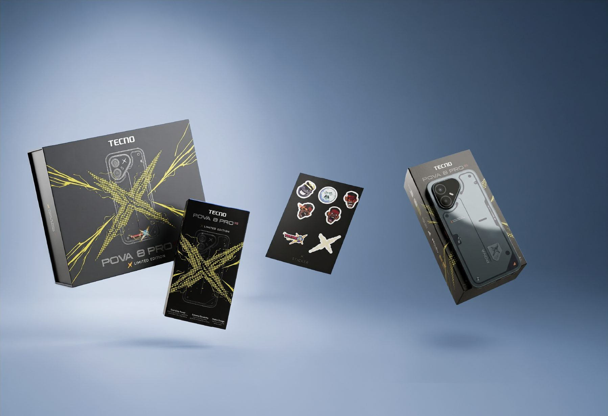
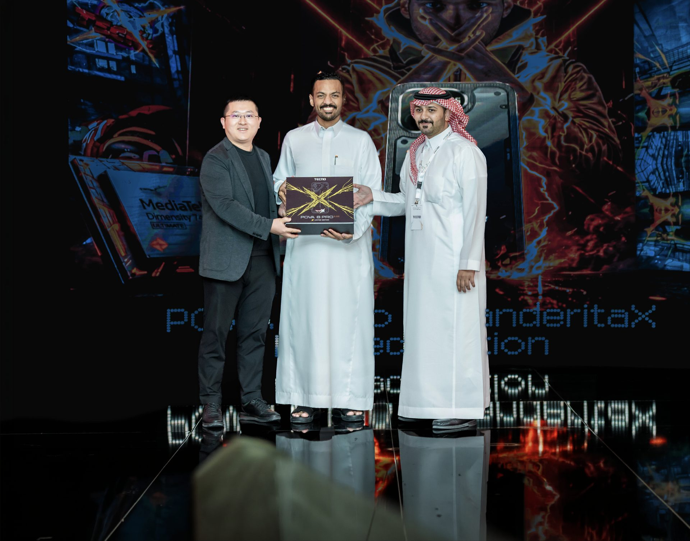
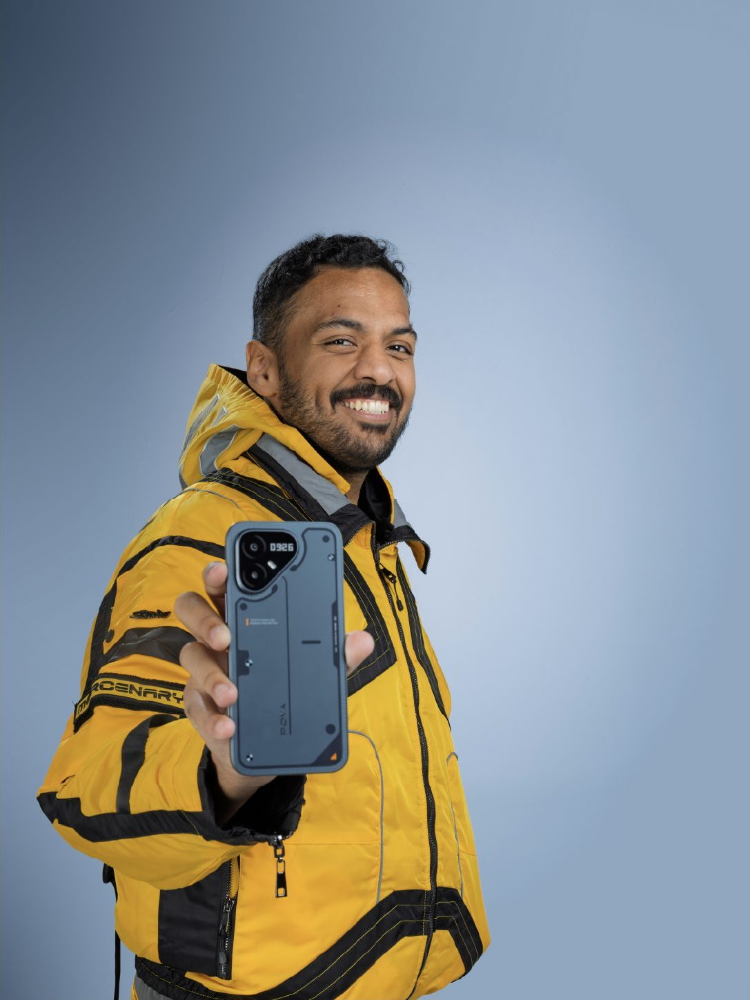
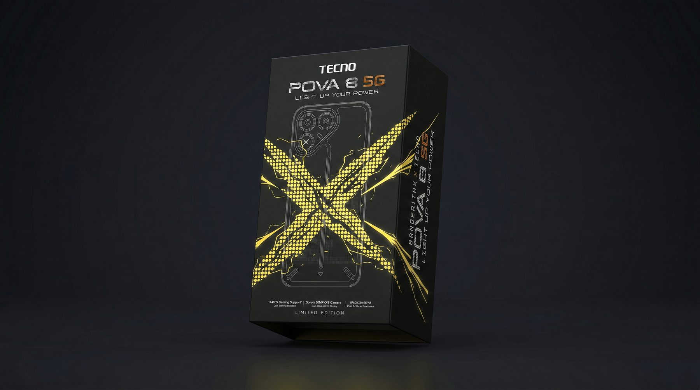
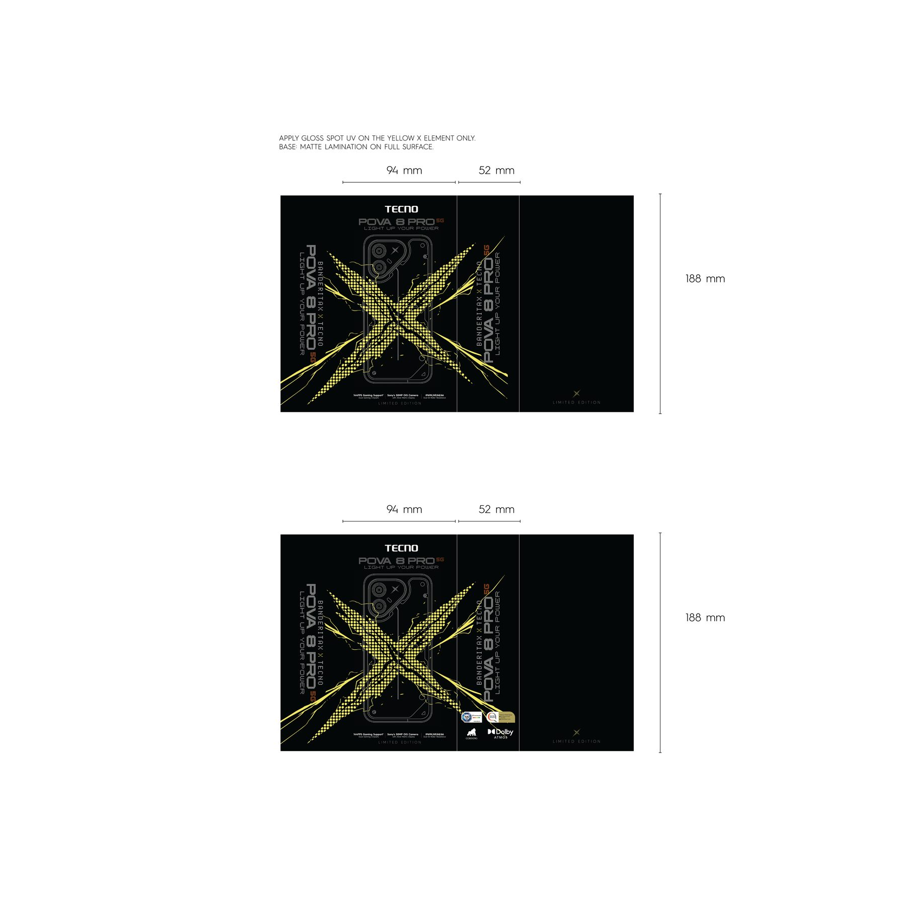
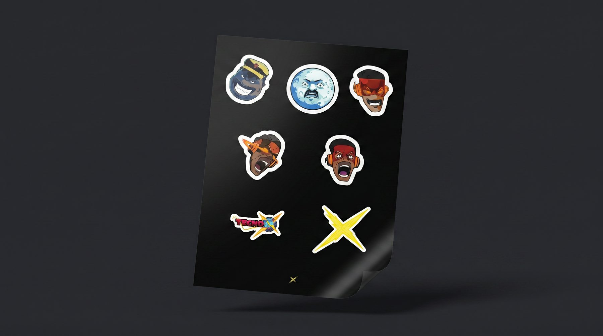

01
الطقم كامل
بوكس، سليف، ستيكرات، وجوال — كلهم لابسين الـX.

جوال POVA 8 PRO بنسخة محدودة باسم بندريتا، لبّسناه مع فريق دولاب: من البوكس لين خلفية الشاشة.
البوكس بيد بندر على مسرح TECNO، ليلة الإطلاق.

هذي اللقطة لحالها تسوى المشروع.

بوكس، سليف، ستيكرات، وجوال — كلهم لابسين الـX.

بوكس أسود، وفي نصه X أصفر يطقطق كهربا.

السليف بطول ١٨٨ ملم، الخلفية مطفية، والـX لحاله عليه لمعة UV عشان يبرق تحت الضو.

شيت ستيكرات هدية مع النسخة، والـX الأصفر أكبر وحدة فيه.
حتى الشاشة لبست بندريتا — سبع خلفيات أصفر على أسود، وأزرق TECNO.